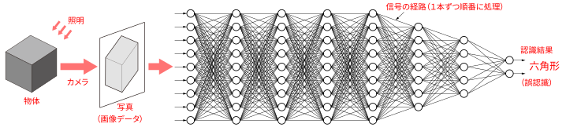
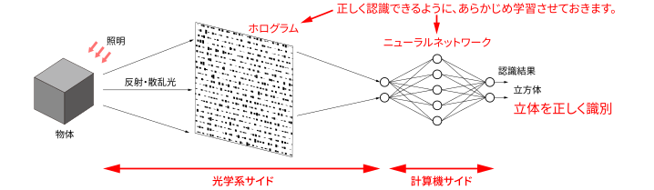

人工知能
人工知能は、「見ている物体がどのような形か」を認識でき、車の自動運転や工業製品のチェックなど、現代の生活になくてはならないものになりつつあります。ニューラルネットワークやディープラーニングと呼ばれる人工知能は、生物の脳のしくみをヒントに作られた人工知能です。
物体をカメラで撮影し、画像データを人工知能に入力します。
この多数の線の上を信号が伝達します。コンピュータは、この線の上のデータを1本ずつ計算していきます。
立方体の写真を入力すると、間違って六角形と認識してしまいました。これは、画像データが平面で、物体の立体情報が含まれていなかったためです。
上の新システムでは、物体からの光をカメラで真っ先に電気信号へ変換せず、途中まで光のまま処理します。前半の光学系サイドでは、ホログラムを使って光波から物体の立体情報を抽出します。立体的な像を映し出すというホログラムの性質を逆に利用しているのです。
光学系サイドでは、光が進むだけで数百億本に相当する「信号の経路」が一瞬で計算されます。そのおかげで、計算機サイドで処理するデータ量を大幅に少なくできます。